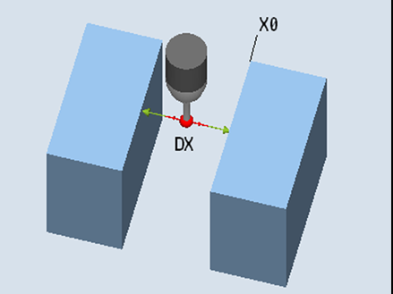

Mit dieser Messvariante kann ein Werkstückmesstaster in einer vom Anwender ausgewählten Achse der Bearbeitungsebene, zwischen zwei parallel zueinander stehenden Referenzflächen abgeglichen werden.
Der Messtaster verfährt mit konstanter Spindelausrichtung in der gewählten Achse, zwischen den Referenzflächen. Der Verfahrweg muss rechtwinklig zu den Referenzflächen erfolgen.
Der ermittelte Kalibrierwert (Triggerpunkt + Lageabweichung) und der Messtasterkugeldurchmesser, werden in das adressierte Kalibrierdatenfeld übernommen. Bei Funktionsauswahl "Lageabweichung ermitteln", werden die Triggerpunkte und die Lageabweichung getrennt auf die entsprechenden Kalibrierparameter geschrieben.
Abgleich: Radius zwischen 2 Kanten (CYCLE976)
Der Messtaster muss als Werkzeug aktiv sein.
Werkzeugtyp des Messtasters:
3D Multi-Taster (Typ 710)
Die Messtasterkugel ist auf Abgleichhöhe ungefähr in der Mitte zwischen den beiden Kanten zu positionieren.
Die Messtastermitte steht auf der Mitte zwischen den Referenzflächen.